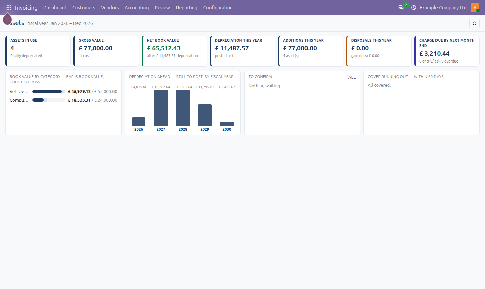
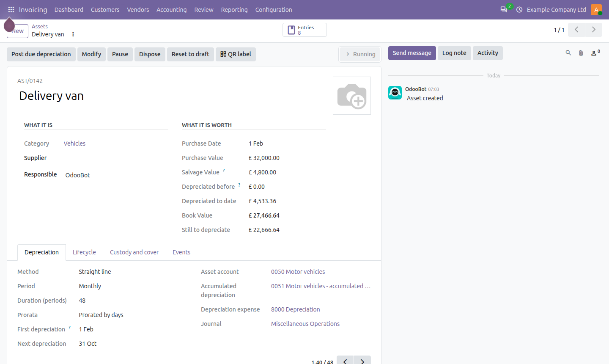
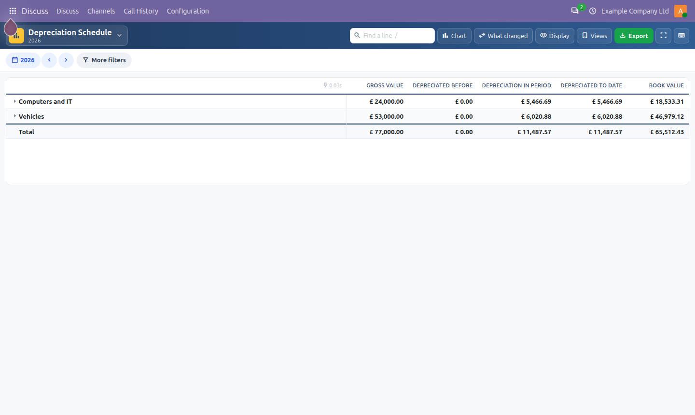

Fixed assets from purchase to disposal: depreciation schedules posted automatically, pauses, revaluations, impairments, disposals with the gain or loss posted, assets created from vendor bills, custody and cover, QR labels and a depreciation schedule report.
Book value by category, this year's additions, disposals and charge, depreciation still to post by fiscal year, assets waiting for confirmation and cover running out.

Straight line, declining balance or declining then straight line; monthly or yearly (yearly follows your fiscal year); prorata by days or months; salvage from the category. Post due depreciation, pause, modify, revalue, dispose - each step on a lifecycle timeline.

Gross value, depreciation before and in the period, to date and book value, by category, unfolding to each asset and to the entries behind each figure.

Vendor bills create assets when a line lands on an asset account. A bill whose assets have posted depreciation cannot be reset behind their back, and entries moved by a lock date carry the asset's dates with them.
Odoo 20.0 Community; depends on Accounting and Dynamic Financial Reports. Screenshots use fictional sample data. OPL-1, © Ebshel Technologies.